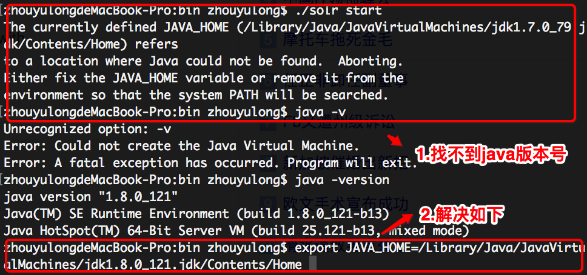
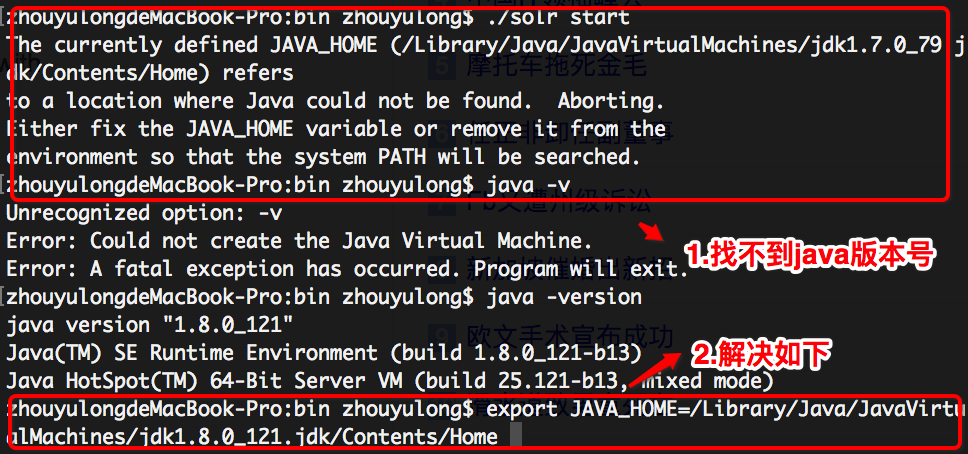

将当前定义的JAVA_HOME定位错误
|当启动solr服务的时候，出现报错的是将当前定义的JAVA_HOME定位到无法找到Java的位置。修复JAVA_HOME变量或从中删除它环境，以便系统PATH将被搜索。

已经解决增加导出设置环境变量方法如下：
export JAVA_HOME=/Library/Java/JavaVirtualMachines/jdk1.8.0_121.jdk/Contents/Home
当启动solr服务的时候，出现报错的是将当前定义的JAVA_HOME定位到无法找到Java的位置。修复JAVA_HOME变量或从中删除它环境，以便系统PATH将被搜索。

已经解决增加导出设置环境变量方法如下：
export JAVA_HOME=/Library/Java/JavaVirtualMachines/jdk1.8.0_121.jdk/Contents/Home